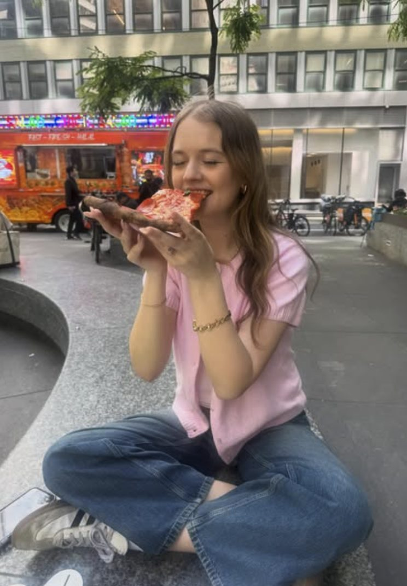
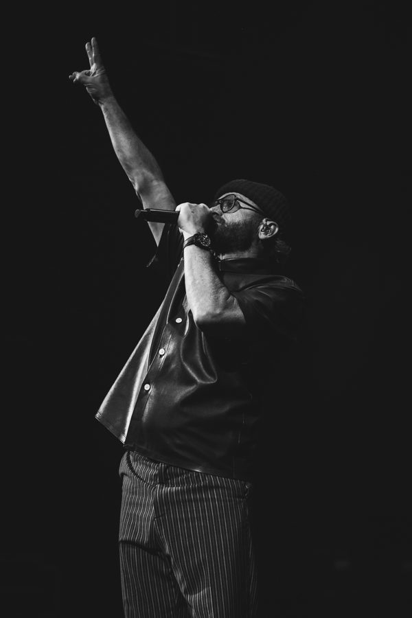

Hey, I'm Victoria
I started with a camera in concert pits, learning to catch real moments in hard light with no do-overs. Now I bring that same instinct to seniors, couples, and weddings around Wise County — real expressions, golden light, and sessions that feel more like hanging out than posing.
When I'm not behind the camera, you'll probably find me at a show. Photography started as a way to hold onto moments; it turned into the thing I love most — making people feel at ease, and giving them proof of how good they look when they're just being themselves.
Say hiThe training ground
TobyMac. Latto. Gregory Alan Isakov. Soulja Boy. Wage War. Concert photography taught me to find the moment in chaos and hard light — your session is easy mode.
